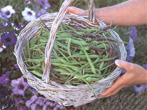
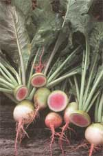
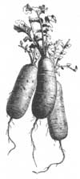
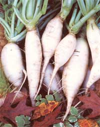
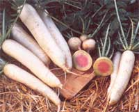
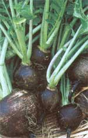
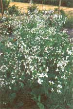

The Other Radishes
How to grow heathy, vibrant radishes that weigh up to 5 pounds, including cool conditions, seed sources, pickled pleasured, a gallery of exotic radishes.
By Doreen G. Howard
August/September 2002
By Doreen G. Howard
These beauties are "Misato Rose"
Chinese radishes.
Forget those wimpy little radishes found on relish plates. They pale in comparison to the other radishes you can grow. Consider sweet, rosefleshed, green-skinned 'Shinrimei' radishes, zesty Japanese daikons or even crunchy, mustard-infused radish pods.
Some weigh up to 5 pounds apiece. Others offer a color explosion. Still others impart cooked dishes with subtle flavors that are the hallmark of some ethnic foods. Now these are radishes!
Esteemed by the Greek god Apollo, cultivated by Egyptian pyramid builders and eaten for breakfast by American settlers, the radish has been around forever. It was prescribed by physicians to prevent scurvy, used by herbalists to ward off women's chatter, and salted or pickled to accompany food and drink throughout recorded time. The radish is still so revered there is a Night of the Radish- La Noche de los Rabanos -every December 23 in Oaxaca, Mexico. Local farmers grow giant white winter radishes, which are carved into sculptures worthy of a museum. Radish bullfighters, radish nativity scenes, radish Madonnas and more line the village square, while merry makers dance and eat-radish tamales, radish empanadas and radish pickles -until midnight, when one radish sculpture is awarded the grand prize. Sculpting a radish may not be your passion, but growing a few of the exotic types certainly can liven up your garden and dinner table.
COOL CONDITIONS
Most of the exotic radishes are best planted in late summer or fall (fall-planted) for a winter crop, or in early spring, as soon as the ground thaws. Warm-climate gardeners do best to plant in late October. Cool soil and air temperatures are needed to develop flavors and avoid building heat, which can mask the subtleties of the various undertones. If you're growing a radish for storage, Jeremiah Gettle, owner of Baker Creek Heirloom Seeds in Mansfield, Missouri, suggests it should be fall-planted. "After harvest, store them in sand or sawdust to maintain moisture, like you would a carrot, and they will improve in flavor." he says. "it takes cool growing conditions to produce a sweet radish." He plants in late August and harvests in early November in his USDA Zone 6 gardens. Some varieties, like 'Black Spanish Round,' contain much of their heat in the skins. Removing the skin helps tame particularly hot radishes.
Some radishes are grown solely for their edible seed pods
(see photo, top) , and they, too, produce the highest quality crop in cool conditions, Because they can mature in as little as 30 days after sowing, podding radish varieties, like 'Munchen Bier,' 'Madras' and 'Rat Tail,' can be planted in very early spring, too. However, if spring is short-lived in your area, fall planting is advisable. "Pick the pods when they are young and tender for best flavor," says Bill Adams, retired Texas extension service agent and vegetable specialist in Houston. Pods can be green or have a purple hue and are attractive salad ingredients. They have a mustard flavor people either love or hate. I like the bite and use them in stir-fry," says Melinda Smith, a former Massachusetts organic farmer, who now conducts a farming apprentice program. "But they were not the hit with my produce customers like I thought they would be."
Pickled pleasures
Radishes make great pickles, and you can prepare them overnight. Start with 2 cups of sliced or chunked firm radishes. Put them in a mixing bowl and sprinkle 1 teaspoon of salt over them. Cover and chill for 30 minutes. Drain accumulated liquid and rinse to remove the salt. Pat dry with paper towels and return to bowl. Add 2 tablespoons rice wine vinegar, a dash or two of ground black pepper and a couple drops of sesame seed oil. Refrigerate at least 8 hours and enjoy.
Since they mature rapidly, exotic radishes prefer a stress-free growing environment, in addition to cool temperatures. Start with fertile soil that has plenty of organic material incorporated into it. Dig a 1-inch layer of compost into the bed and work the soil to a depth of at least 8 inches. Japanese daikons will grow 20 inches or more into friable soil. Don't be surprised to see up to one-third of the radish growth above ground, though. Such growth is typical of Asian radishes, including Chinese varieties.
Sow seeds and grow exotic radishes as you would small red ones. Maintain a steady supply of soil moisture, so plants are never stressed. Thin plants to stand 6 inches apart (8 inches for daikons) after two sets of true leaves appear. Flea beetles and root maggots, the two major radish pests, can be avoided by placing floating row cover over the bed.
If podding radishes are grown, don't cover them when flowering begins. They need insects and air movement to pollinate flowers that create the pods. Instead, spray in early morning with neem seed oil if insect pests appear. Don't use neem oil after 10 a.m., since beneficial pollinating bees will be present and the oil may burn plant leaves in full sun.
Mother Earth News
Contributing Editor Doreen Howard has been growing, researching, cooking, eating, speaking and writing about vegetables for more than 20 years. She is currently working on a new book entitled
Beautiful Heirloom Vegetables and Fruit.
Gallery of exotic radishes Note: The numbers in parentheses indicate which of the companies listed on Page 48 offer each variety.
JAPANESE DAIKONS
Sharper flavor and much larger than Chinese radishes
'All Seasons,' also called 'Tokinashi' 65 days. Can be planted in spring or fall. Great for pickling. (3, 4) 'Sakurajima Mammoth' 70 to 140 days. Fall-planted. Largest radish in the world, can grow to 100 pounds. Mild and sweet. Also fed to livestock. (4) 'Miyashige' 60 days. Fall-planted. Will bolt-go to seed prematurely - if spring-planted. Sweet, brittle, tender flesh. (4, 5) CHINESE
Beautiful colored flesh: delicious eaten fresh out of hand
'Bartender Red Mammoth' 70 days. Does well in hot weather. Nine-inch roots with red skin and crisp, pink flesh. (1)
'Red Meat,' 'Chinese Shinrimei' or' Misato Rose' 60 days. Fall-planted. Red-fleshed with white-and-green skin, 2- to 4-inch diameter globes. Very sweet. (1, 2,4, 5)
'Green Meat' or 'Misato Green' 60 days. Spring- or fall-planted. Green skin and flesh; 8- to 1 10-inch-long cylindrical roots. Skin has pungent flavor, but flesh is sweet. (1, 4)
'Chinese White Celestial' or 'Chinese White Winter' 60 days. Fall-planted. White skin and flesh; 7- to 9inches long with a blunt tip. Crisp, mild and excellent keeper. (1, 4)
SPANISH
Rough skins with dense flesh; zesty flavor
'Black Spanish Round' 65 days. Fall-planted. Black, corky skin with white flesh. Best used as a pickling or cooking radish. Excellent for storage. (1, 2)
PODDING RADISHES
You eat the seed pods instead of the roots.
'Madras' 30 days. Fast flowering and bearing. Juicy pods appear on tall stalks. Pick young for mild taste. Blanch when older to temper radish taste. Use in salads and stirfries. (3)
'Munchen Bier' 55 days. Needs cool soil to produce flower stalks and pods, so plant early or wait until autumn. This variety will also produce a thick, dense radish root when fall-planted. The radish is traditionally sliced thin, salted and served with beer. (2, 3)
'Rat Tail' 30 days. Long bearing; purple pods will form all summer if kept picked. Use pods before they become fibrous. (3)
Seed Sources
1. Baker Creek Heirloom Seeds 2278 Baker Creek Road Mansfield, MO 65704 (417) 924-8917
www.rareseeds.com
2. FEDCO Seeds PO. Box 520 Waterville, ME 04903-0520 (207) 873-7333
www.fedcoseeds.com
(Seeds shipped only in spring, until April 12.)
3. Bountiful Gardens 18001 Shafer Ranch Road Willits, CA 95490 (707) 459-6410
www.bountifulgardens.org
4. Nichols Garden Nursery 1190 Old Salem Road NE Albany, OR 97321-4580 (800) 422-3985
www.nicholsgardennursery.com
5. Johnny's Select Seeds Rural Route 1, Box 2580 Albion, ME 04910 (207) 437-4301
www.johnnyseeds.com
|
 With ""Rat Tail"" podding radishes you eat the seed pods, not the roots. |
 These beauties are ""Misato Rose"" Chinese radishes. |
 Mild-flavored Chinese 'White Winter' radishes keep well in a root cellar |
|
 The sweet 'Misato Green' radish can be planted in spring or fall. |
 Japanese daikons can grow very large. |
 Use 'Black Spanish Round' for pickling and cooking |
|
 'Rat Tail' radishes in bloom |
 |
|